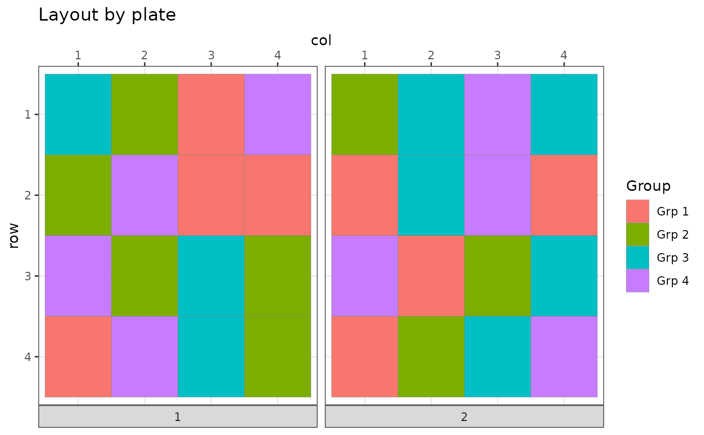

R/shuffle_samples.R
mk_subgroup_shuffling_function.RdIf length(n_swaps)==1, the returned function may be called an arbitrary number of times. If length(n_swaps)>1 the returned function may be called length(n_swaps) timed before returning NULL, which would be the stopping criterion if all requested swaps have been exhausted.
mk_subgroup_shuffling_function(
subgroup_vars,
restrain_on_subgroup_levels = c(),
n_swaps = 1
)Column names of the variables that together define the relevant subgroups
Permutations can be forced to take place only within a level of the factor of the subgrouping variable. In this case, the user must pass only one subgrouping variable and a number of levels that together define the permuted subgroup.
Vector with number of swaps to be proposed in successive calls to the returned function (each value should be in valid range from 1..floor(n_locations/2))
Function to return a list with length n vectors src and dst, denoting source and destination index for the swap operation, or NULL if the user provided a defined protocol for the number of swaps and the last iteration has been reached
set.seed(42)
bc <- BatchContainer$new(
dimensions = c(
plate = 2,
row = 4, col = 4
)
)
bc <- assign_in_order(bc, samples = tibble::tibble(
Group = c(rep(c("Grp 1", "Grp 2", "Grp 3", "Grp 4"), each = 8)),
ID = 1:32
))
# here we use a 2-step approach:
# 1. Assign samples to plates.
# 2. Arrange samples within plates.
# overview of sample assagnment before optimization
plot_plate(bc,
plate = plate, row = row, column = col, .color = Group
)
# Step 1, assign samples to plates
scoring_f <- osat_score_generator(
batch_vars = c("plate"), feature_vars = c("Group")
)
bc <- optimize_design(
bc,
scoring = scoring_f,
max_iter = 10, # the real number of iterations should be bigger
n_shuffle = 2,
quiet = TRUE
)
plot_plate(
bc,
plate = plate, row = row, column = col, .color = Group
)
# Step 2, distribute samples within plates
scoring_f <- mk_plate_scoring_functions(
bc,
plate = "plate", row = "row", column = "col", group = "Group"
)
bc <- optimize_design(
bc,
scoring = scoring_f,
max_iter = 50,
shuffle_proposal_func = mk_subgroup_shuffling_function(subgroup_vars = c("plate")),
aggregate_scores_func = L2s_norm,
quiet = TRUE
)
plot_plate(bc,
plate = plate, row = row, column = col, .color = Group
)
